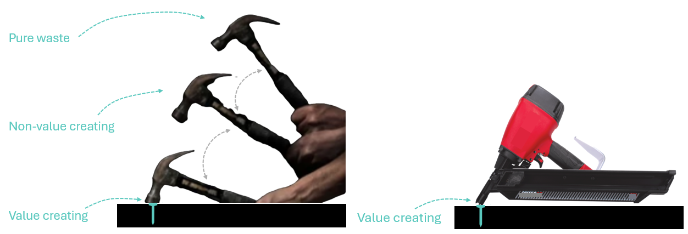
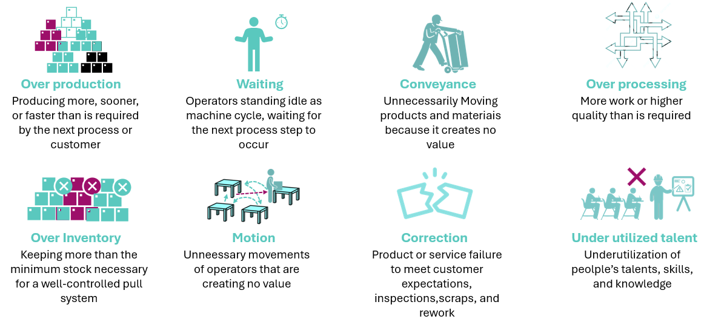
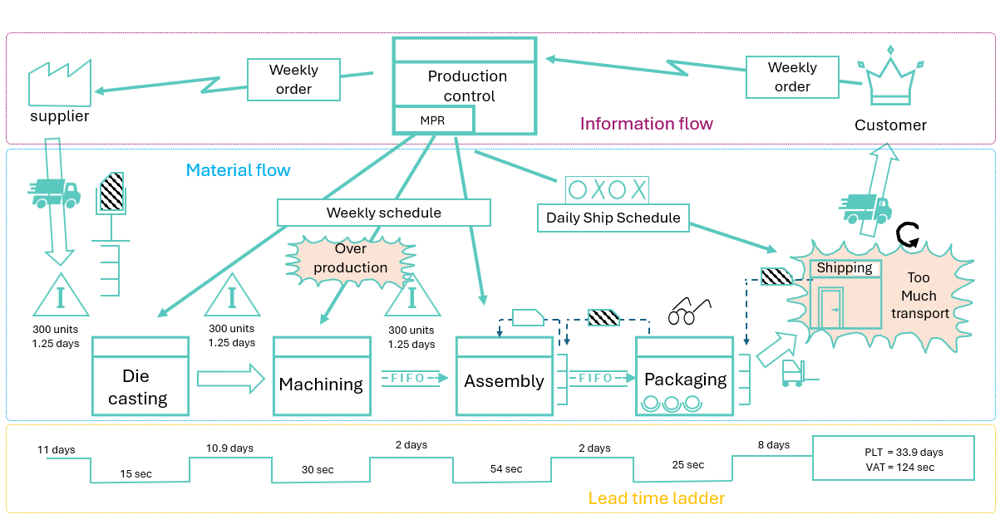
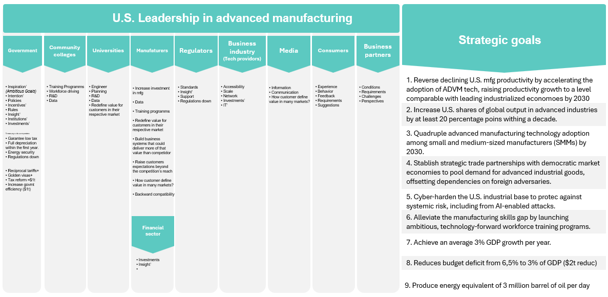
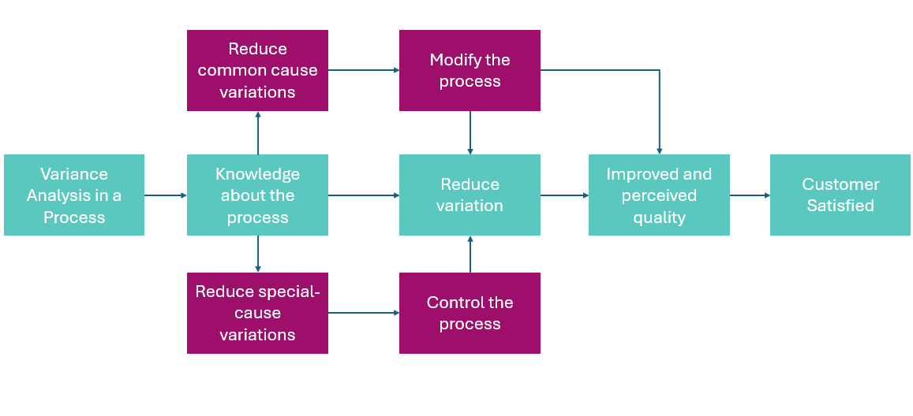
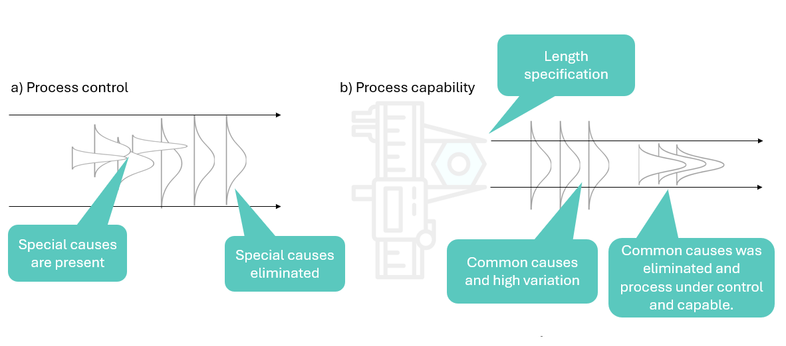

MIT Advanced Manufacturing Courses
What innovations are scaling up manufacturing and transforming the world in profound ways?
Lean Six Sigma
What Are These Classes About ?
- MIT offers 17 classes introducing lean principes and Six Sigma methods, presented by professor Earll Murman, Hugh McManus, Annalisa Weigel, Bo Madsen and more.
- Recommended book: Kaizen Express: Fundamentals for Your Lean Journey by Toshiko Narusawa and John Shook
- Additional useful video: *Industry Talks E11: James P. Womak - available on YouTube.
Summary
- Overview of productivity, quality defects, and training hours, highlighting differences between North American and Japanese manufacturing in 1990.
- Lean thinking is a knowledge-driven, customer-focused approach in which everyone within an enterprise continuously work to eliminate waste and create value. Organizations often adopt their own branded version of lean(e.g., GE Aviation-Flight Deck, Pratt&Whitney-ACE, U.S.Air force-AFS021, Boeing-Lean+, NYC Health + Hospitals - Breakthrough)
- Lean thinking is both a mindset and a set of practices focused on creating more value with fewer resources. It involves continuous experimentation and improvement to eliminate waste and optimize the entire value stream from raw materials to the customer.
Types of value in process steps
- Value added process steps: Transform or shape materials.
- Necessary waste process steps: Regulatory, project coordinations.
- Pure waste process steps: Excess moviment, inventory, wait time, rework, confusion(information process).
Value Stream map
Identify all the steps involved in delivering value and eliminate non-value-adding activities.
- Elements of a process, process map, value in a process, five fundamental lean principles, concepts and tools for implementing lean principles.
- Process is a series of actions, changes, or functions which transform inputs to outputs.
- Customers also drive the inputs to a process through their needs and requirements.
Continuous flow
- Flow: Ensure a smooth and continuous flow of work through the value stream.
- Pull: Produce only what is needed, when it is needed.
- Perfection: Continuously strive for perfection by eliminating waste and improving processes.
Social contract or contancy of purpose
Lean’s succes hinges on a strong social contract between employees and the company, supporting a culture of continuous improvement with the aim to become competitive and to stay in business, and to provide jobs. Workers will only contribute ideas if they feel the arrangement is fair and mutually beneficial. Employees are commited to dedicate themselves to their jobs, while the company is commited to provide opportunities for skill development, enabling employees to defend their jobs.
Hosing Kanri focuses on aligning the entire organization around a few critical strategic objectives. It involves setting clear goals, developing action plans, and monitoring progress towards those goals.
Toyota started in 1935 and they only got their system perfected by the mid-1960s. It took them 25+ years of experiments and they’ve struggled across the world to maintain the standard as they’ve grown.
Shifting from KPIs to Problem-Solving or instead of giving orders and say do that, do this, they say “Okay, here’s the problem, here is the gap that we’re trying to close, what are you going to do, how can I help?” That is a different conversation than “make your numbers”.
According to James P. Womack (2022), reducing inventory should not be the primary focus, but rather a result of improving capability and reducing variability. He emphasizes that simply decreasing inventory reduction without addressing underlying issues will lead to stockouts and dissatisfied customers.
Standard Inventory
In the Lean world, standard inventory is the necessary amout to protect the customer and maintain a smooth production flow that includes:
- Safety stock: To buffer againg process incapability
- Buffer stock: To absorb variations in uptream processes
- Shipping stock: To accommodate shipping frequency
Focus on Capabilty and Variability
- Improve process capability to consistently produce good results, reducing the need for safety stock.
- Employ Heijunka (production leveling) to smooth demand and minimize buffer stock.
- Increase shipping frequency to reduce shipping stock.
Inventory as a consequence
When capability improves and variability decreases, the need for standard inventory naturally diminishes, leading to lower inventory levels. In a high-interest-rate environment, reducing inventory becomes even more crucial, as excess inventory ties up capital. In world war 2, Toyota focus on minimizing inventory due to the high cost of money in Japan.
Continuous improvement
Evolution of Lean Implementation that has shifted from a consultant-driven. “quick-fix” approach to a coaching model that empowers employees to identify and solve problems themselves. Every day, everyone is involved in eliminating waste, making their jobs easier and taking pride in their work.
Genchi genbutsu principles, relying on data and observations produced by others does not give a complete understanding. This meaning go to the actual place, talk to the actual people, doing the actual work



Tools of Lean principles
Process mapping is a graphical representation of an idea or steps using texts, illustrations, ideograms or greometric figures. The idea is to provide a clear vision of the whole thing, the flow of elements in the drawing, and the direction they go Anjos (2024)
Basic stability
Lean focused on reduce waste and six sigma focused on reduced variation creating a basic estability preparing the environment for implementation of Lean.



Preventing short-sighted or palliative decisions from leading to unintended consequences requires a meticulous and systematic study of cause-and-effect relationships. Whithout this depth of understanding, interventions can consume significant resources(e.g., time, money) during later efforts o reorganize systems.
A compelling illustrations of this principle is the case of the Large Blue Butterfly in southern England. Recent research has revealed a positive correlation between the success conservation of the butterfly and the preservation of Myrmica ants and thyme plants. The ants carry thyme seeds to their nests, along with butterfly larvae. Due to physical and chemical mimicry, the Phengaris caterpillars(Large Blue larvae) deceive the ants using a “cuckoo strategy”–a form of brood parasitism– by preying on ant larvae or begging for food as if they were genuine ant offspring, ensuring the survival and proliferation of the butterfly species. This complex interaction is essential for the betterfly’s survival and reproduction.
These intricate ecological relationship were not understood in 1970s, when some countries attempted to control rabbit overpopulation to protect crops. However, rabbits played a crucial role in maintaining short grass. Once their population was reduced, the grass grew rapidly, cooling the soil and creating an unfavorable environment for the thyme plants and Myrmica ants. As the Ants disappeared, so did the butterflies that depended on them. This disruption led to the extinction of the Large Blue Butterfly, and it took 40 years of intensive scientific research to restore the ecosystem.
Interestingly, data later disproved the theory that butterfly collectors caused the species’ decline. Ironically, measures to deter them–like fencing–excluded grazing animals, accelerating grass growth and habitat loss.
Professor Earll Murman, in his MIT OpenCourseWare lectures, compares industry training hours in Japan (380.3) to those in the United States(46.4). While the value of training is difficult to measure is the short term, studies like the Ebbinghaus forgetting curve offer insights into the cause-and-effect relationship between consistent training and long-term expertise.
Sorce: MIT by Earll Murman, Hugh McManus, Annalisa Weigel and Bo Madsen
Innovation Systems
What is it ?
- There are 20 classes with an introduction to Innovation Systems for Science, Technology, Energy, Manufacturing, and Health, published by MIT and presented by professor William Bonvillian.
Summary
- Innovation: Railroad, telegraph, electricity, quality manufacturing, Internet 2000, Energy systems.
Important factors
Solow MIT: You got to do R&D to achieve technological innovation
Paul Romer Stanford: Human capital engaged in research (talent base) to drive economic growth.
Dale Jorgenson Harvard: Core technology + driven the economic growth and innovation.
Merryl Linch: Venture capital. Investor understand value of technology breakthroughs, but only support short term development.
Federal government supports predominantly research while industr supports predominantly development. Research is going to drive development over an extensive period of time.
Innovation pipeline
Research > Development > Prototype > Demo > Testbed > Production > Market
Basic concepts
Data: Fragments that can be analyzed and/or used in the effort to acquire knowledge or make decisions. Potential information that requires processing unit to generate value.
Science: Observe and understand the natural world
Technology: System to organize scientific and technical knowledge or both to achieve a practical purpose.
Research: Increasing scientific or technical knowledge or both.
Invention: Applying research knowledge to create a practical idea or device.
Innovation: Built on scientific discovery and breakthrough invention * commercialization
System: Bunch of components working together to achieve some type of goal Ali the Dazzling (2024)
Innovation system: Ecosystem for developing innovation operates at two levels: institution actors and face-to-face groups.
Process innovation:
Innovation wave: 40/50 year cycle of innovation based on radical breakthrough (aviation, electronics, space, nuclear power, computing, internet), disruptive invention, and then application piled on this, productivity rises, then long period of incremental invention(effect spread around the system)
Valley of death: Where innovation and invention usually dies, gap between research and development, institutions often not in place to bridge this gap, and move idea into dev prototyping and production, then invention into innovation Osawa and Miyazaki (2006).
Source: MIT by by William Bonvillian
Smart Manufacturing
What is it ?
Interactive 10-week course about Smart Manufacturing: Moving From Static to Dynamic Manufacturing Operations, published by MIT and presented by professor Brian Anthony.
For modeling to manufacturing systems, advanced data analytics, involves instruments and techniques to monitor and control physical systems through mechanical, electrical, and optical engineering along with computer science and optimization.
Summary
Technologies like AI, IoT and automation together create a highly connected intelligent sysmtes and implementing this practices anables factories become more efficient, more flexible, and more responsiveness changes in demand.
Smart manufacture facilitates more informed decision making and improved sustainability.
The course is centered in FrED, fiber extrusion device created by MIT to test conceps, methods and new manufacturing innovations. Applying knowledge from FrED give up practical experience with advanced manufacturing
Source: MIT by by Brian Anthony
Industrial Internet of Things
What is it ?
Interactive 9-weeks(on line) course about Industrial Internet of Things: From Theory to Applications, published by MIT and presented by professor Brian Anthony.
Real life case studies, research about digital tools and new generation of sensors including fundamental sensing, computing, and communication softwware technologies.
Summary
Work with embedded and beyong IoT systems and sensors
Design beyond IoT products and platforms using hardware and software.
Solve problems with machine learning
Devise solutions for industrial cases in transportation, healthcare, agriculture, wellness, the environment using beyond IoT principles.
A few examples of how IoT(Internet of Things) is applied in smart manufacturing
Predictive maintenance: IoT sensors embedded in manufacturing equipment collect data on performance metrics like temperature, vibration, and usage patterns. This data is analyzed in real-time to predict when maintenanced is needed, reducing downtime and optimizing equipment lifespan.
Inventory management: IoT devices track inventory levels in real-time. This includes raw materials, work-in-process(WIP), and finish goods. Manufacturers can use this data to automate reordering processes, optimize storage and reduces waste.
Quality control: IoT enabled sensors monitor product quality during manufacturing processes. They can detect defects early, ensuring that only high-quality products reach customers. This improves overall product uniformity and reduces waste.
Supply chain optimization: real time tracking of goods throughout the supply chain. Manufacturers gain visibility into the movement of raw materials, components, and fished producs. This helps in optimization logistics, reducing lead times, and improving overall supply chain efficienty.
Energy Management: Sensors monitor energy consumption across manufacturing facilities. This data is analyzed to identify energy-saving opportunities, optimize usae patterns, and reduce overall energy costs.
Worker safety and Efficiency: Wearable sensors track worker movements and environmental conditions. This helps in ensuring worker safety by detecting potential hazards and optimizing workflow efficiency.
Remote Monitoring and control: For managing multiple facilities or accessing critical data from off-site locations.
Type of sensors
Source: MIT by Brian Anthony
Advanced Data Analytics
What is it ?
4 days course (on campus) about Advanced Data Analytics For IIOT and Smart Manufacturing, published by MIT and presented by professor Brian Anthony.
This course is on Campus, and is closed. Course length: 4 days MIT Corporate Relations (2023)
This course is structured based on industrial case driving with cases on optical fiber continuous extrusion, preform fabrication, coffe roasting(Nescafe), packaging beverages(tetrapack), engine manufacturing(Nissan), human monitoring and observation factory and clinic for improve quality(BMW), among others. The idea is to use consolidated techniques such as data distribution, probability, fourier transform Oficiencia (2019) and machine learning to perform spectral analysis for predictive maintenance for example.- .
Summary
Machine learning base twins on the factory floor process control with real time feedback for quality control.The idea is to expose to IoT(feedback control) data, using statistical trends to identify anormally and automatically improve the process using machine learning models for SPC beyond “normal”.
Use of laser ultrasound imaging to capture charateristics of object and build digital map for 3D print for example see inside of pipeflows for contaminants. Motion vision make decision base on video in process manufacturing with feedback decision.
| Tools of the day1 | Tools of the day2 | Tools of the day3 | Tools of the day4 |
|---|---|---|---|
| Machine learning for real time process control and monitorig | Discrete Event Simulation | Security: Homomorphic Encryptions | Complex Assemblies |
| Deep reinforcement learning for real-time control | Synthetic Training | Inverse Problems | Unsupervised learning - assemblies, test, and quality check |
| Time-series classification with CNN and LSTM | LSTM RNN vs Clustering | ||
| Cases of the Day1 | Cases of the Day2 | Cases of the Day3 | Cases of the Day4 |
| Food processing | Automotive | Imaging | Packaging |
| Ambient Sensing in the Home | Fiber | Inverse Design | Automotive |
| Fiber | |||
| Themes | Themes | Themes | Themes |
| Continuous processing | Systems/Lin/Batch processes | Design and Inverse problems | Complex Assembly and Test |
Digital twin is a virtual model of a physical object, product, process, or system that is regularly updated with data to maintain a strong resemblance to its real-world counterpart.
Think of it like a very detailed, always-on simulation(e.g., if you have a physical machine on a factory floor, its digital twn would be a software mdoel taht gets constant updates from sensors on the real machine. This allows you to monitor, analyze, and event predict the behavior of the physical assent without directly interacting with it)
Source: MIT by Brian Anthony
Fundamentals of Autonomous Robots
What is it ?
4 days course (on campus) about Advanced Data Analytics For IIOT and Smart Manufacturing, published by MIT and presented by professor Brian Anthony.
This course is on Campus, and is closed. Course length: 4 days MIT Corporate Relations (2023)
This course is structured based on industrial case driving with cases on optical fiber continuous extrusion, preform fabrication, coffe roasting(Nescafe), packaging beverages(tetrapack), engine manufacturing(Nissan), human monitoring and observation factory and clinic for improve quality(BMW), among others. The idea is to use consolidated techniques such as data distribution, probability, fourier transform Oficiencia (2019) and machine learning to perform spectral analysis for predictive maintenance for example.- .
Summary
Identify the key components and tupes of autonomous robots.
Describe basic principles.
Recognize the main elements of robotics systems and architecture.
List the primary sensors and perception techniques use in robotics, and more.
Identify current trends and challenges in robotics, including the use of foundation models.
Source: Nvidia Deep Learning Stitute
Advanced Additive Manufacturing
What is it ?
12 weeks course (on line) about Advanced Additive Manufacturing for Innovative Design and Production, published by MIT and presented by professor John Hart, Wojciech Matusik, Emanuel “Ely” Sachs and others.
Learn the fundamentals, applications, and business implications of 3D printing for desing and manufacturing.
Summary
Source: MIT by John Hart, Wojciech Matusik, Emanuel “Ely” Sachs and others